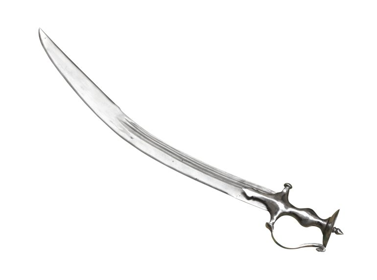
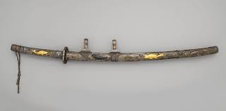

Origins & Evolution
The samurai sword, known as the katana, represents more than a weapon it embodies the spirit, honor, and artistry of feudal Japan. Its evolution spans centuries of refinement, from battlefield necessity to philosophical symbol.

Early Straight Swords
Japanese swords began as straight, double-edged blades influenced by Chinese and Korean designs. These early weapons served mounted warriors but lacked the distinctive curve of later designs.

The Curved Blade Emerges
During the Heian period, smiths discovered that curved blades performed better in combat. The tachi, worn edge-down from the belt, became the preferred weapon of mounted samurai.

Golden Age of the Katana
The katana emerged as the definitive samurai sword. Worn edge-up through the belt, it allowed for faster drawing techniques. Master swordsmiths achieved legendary status during this period.